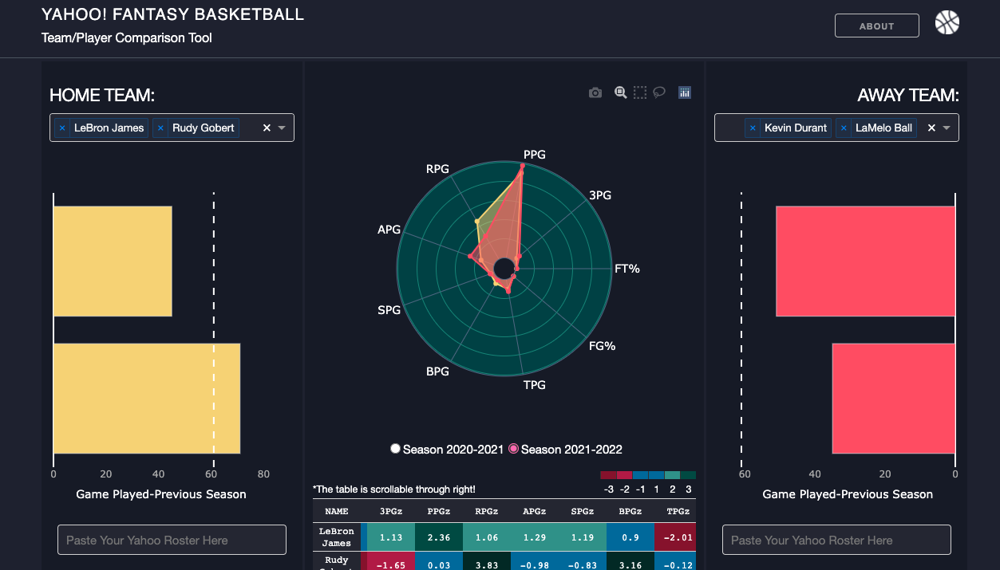

A Comparison Tool For Yahoo! Fantasy Basketball

I was invited to play Yahoo! Fantasy Basketball by a group of friends in late October, just before the NBA season we are following started. I had heard about fantasy games for various sports in the past but didn’t try any of them for any reason. I was even a little bit prejudiced towards it: Why would anyone want to spend time on a static game which is minimally interactive? But, I truly fell in love with the game from the first day. My affinity for the game has grown so much over time that it led me to make a dashboard about it!
I didn’t want to make something without any utility. Thus, I would solve something that I encounter in the game frequently: the difficulty of comparing multiple players, or even rosters, with each other.
In this regard, I designed the dashboard in a way that while the tools for visual and numerical comparison are positioned in the center, the elements for creating your roster are placed on the side columns.
One can build his roster either by selecting his players from the dropdown menu or by simply copying his players from the team roster tab of your Yahoo Fantasy web application and pasting it into the text input section in one go.
The polar graph on the center compares visually the nine default categories/stats which are widely used in a category-based league, while two stat sheets for each corresponding roster are there for the ones who are after for a more precise, numerical comparison.
In addition to 9 per game statistics, stat sheets contain minutes per game (MPG) and the total game-played (GP) stats for the players of their selected season. Moreover, $Z$-scores of the corresponding statistics can also be found by scrolling the sheet to the right.
$Z$-scores are calculated by utilizing the conceptual population that is created by including statistics of the top 120 players of the previous NBA season (2020-2021).
$Z$-scores of the statistics, except the $Z$-scores of FG% and FT%, are calculated by following the classical formula of $(X_{ij}-u_j)/sd_j$ where u and sd are the population mean and the population standard deviation for the corresponding statistics, respectively. FG% and FT% stats are weighted by corresponding per game shooting attempts before their “weighted” $Z$-scores are calculated. $Z$-scores are also color-coded according to their sigma levels (standard deviations). Given 68% of the players lay between -/+1 standard deviation while 98% of them lay between -/+2 standard deviation, having stat on -/+3 standard deviation makes a player roughly %1 and %99 percentile, respectively!
Moreover, it is a good sign for a player to spread his performance throughout a season. The total number of games played per season is not only a useful metric to characterize the injury proneness of a player but also his performance consistency. Hence, bar charts that show the total game played for the selected players in their previous season (2020-2021) are also put on the side columns.
Technical Part
I used the Dash framework for the dashboard. Dash is an open-source Python framework used for building analytical web applications. It is pretty easy to work with once the logic of their call-back functions is fully digested. On the other hand, I wouldn’t say the same thing about the layout (I guess it is obvious from my layout :) ). If you want to go out of the box and do something original, you need to wrap your head around CSS and HTML. However, The Dash Bootstrap Components is sufficient; if you don’t want to deal with the front-hand.
For the deployment of the dashboard, I used Heroku, a cloud application platform. It is completely free and adequate for small side projects like this one. Once you deploy your application, you can synchronize it with a GitHub repo in a way that every time you push a commit to your repo, Heroku automatically updates your app in real-time.
Another issue I needed to address is to update the data periodically. An NBA game takes place almost every day, and the stats are needed to be updated periodically. Theoretically, creating a database, connecting it to your Dash app, and updating it frequently would be the best solution. However, I don’t have sufficient information on databases. Instead, I wrote myself a python script that scrapes Basketball Monster and a bash script that consists of Git commands for pushing a commit to the dashboard’s Git repository and automate them daily with crontab, a task scheduler for macOS.
You can reach out to the source code of the dashboard via project’s GitHub repo. Moreover, you can always e-mail me without any hesitation in case you want to build something out of this app; I would be more than happy to help!
Beyond that, nobody would say no to a small treat; if you want to get me a cup of coffee, you can send AVAX, ETH, FTM, or BNB directly to my wallet: 0x4866C55E04F80d28FfAD35a2a5CAA264085c2A94